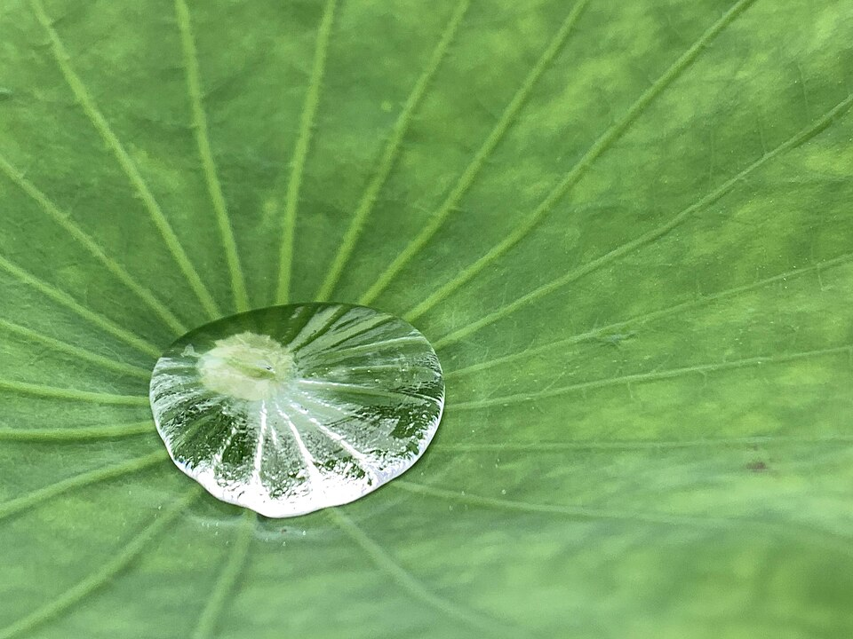

La hoja que no se moja: rugosidad, aire atrapado y gotas que se llevan el polvo
Las hojas del loto tienen fama de estar siempre limpias. Cuando les cae agua, las gotas no mojan la hoja: se quedan casi esféricas, ruedan y se llevan el polvo. Ese comportamiento, una superficie que no se moja y se limpia sola, se conoce como efecto loto, y su explicación cambió la ciencia de los materiales.
Una superficie es hidrofóbica cuando el agua la toca con un ángulo de contacto mayor que 90°. Según Bush, del MIT, se la llama superhidrofóbica cuando ese ángulo supera los 150° [1]. Sobre una superficie así, una gota apenas apoya una pequeña parte de su superficie y queda casi como una esfera.

En 1997, los botánicos Barthlott y Neinhuis publicaron en la revista Planta un artículo titulado «Pureza del loto sagrado, o cómo escapar de la contaminación en las superficies biológicas» [2]. Según la reseña de Laurent Vonna, a partir de imágenes de microscopía electrónica de barrido propusieron que la repelencia al agua viene de una textura de cera, en escalas nanométricas y micrométricas, sobre la superficie de las hojas [3]. Esa textura reduce muchísimo el contacto entre la hoja y el agua, la adhesión se vuelve muy baja y las gotas ruedan llevándose la suciedad: el efecto autolimpiante [3].
El faquir: un faquir se acuesta sobre una cama de clavos y no se lastima, porque apoya su peso en muchas puntas y casi no toca nada. Una gota sobre una hoja de loto hace algo parecido: se apoya en las puntas de la textura de cera, con aire atrapado entre ellas. Bush usa justamente esa imagen: a ese estado se lo llama «estado fakir» [1].
La física de las superficies rugosas tiene dos modelos clásicos, que Bush explica con detalle [1]:
Bush lo resume así: mantener el estado de Cassie es la clave de la repelencia al agua [1]. Una hoja de loto es superhidrofóbica no solo porque su cera repele el agua, sino porque su textura atrapa aire.
Vonna cuenta que el artículo de 1997 provocó un verdadero cambio de paradigma en la ciencia de superficies, y que en julio de 2023 ya acumulaba 5162 citas [3]. Pero la idea no era del todo nueva. Barthlott había presentado el efecto autolimpiante en 1981, citando de paso el trabajo de Cassie y Baxter de 1944, y en 1992 había publicado un artículo en alemán con el efecto en el título [3]. Esos trabajos quedaron confinados a la botánica sistemática, hasta que el artículo de Planta y un fuerte trabajo de divulgación los llevaron a la ciencia de materiales [3]. Después el término «efecto loto» se volvió de uso común [3].
Más allá del loto: según Vonna, la investigación pasó después a texturas que resisten líquidos con menos tensión superficial que el agua, como los aceites, que sí mojan una hoja de loto [3]. Barthlott y sus colaboradores descubrieron también que el helecho acuático Salvinia puede mantener una capa de aire cuando está sumergido: el «efecto Salvinia» [3].
El efecto loto es la mojabilidad llevada al extremo. La cera de la hoja repele el agua, y su textura microscópica atrapa aire, de modo que las gotas se apoyan en puntas, como un faquir, y ruedan llevándose el polvo. Lo que empezó como una observación de botánicos con un microscopio electrónico se convirtió en uno de los temas más activos de la ciencia de materiales.
Pregunta para la comunidad: Según la fórmula de Wenzel, ¿qué le pasa a una superficie hidrofílica (θe < 90°) si se la hace más rugosa? ¿Y qué pasa con una hidrofóbica? Compará los dos casos.